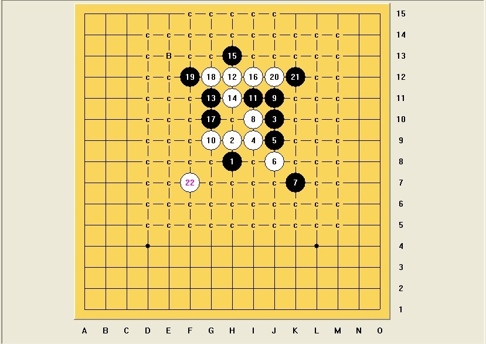
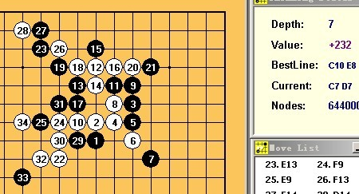
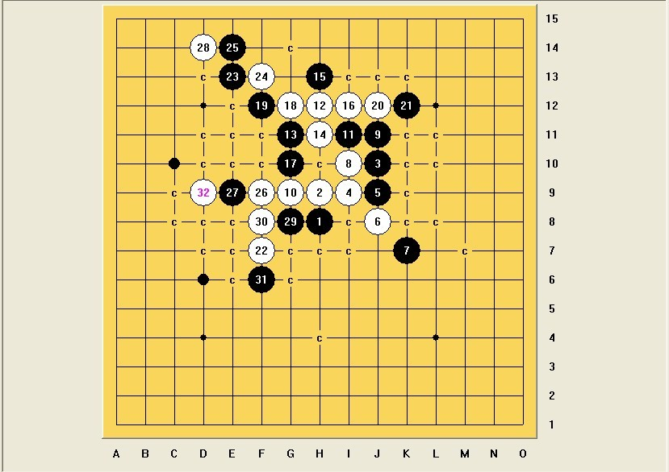
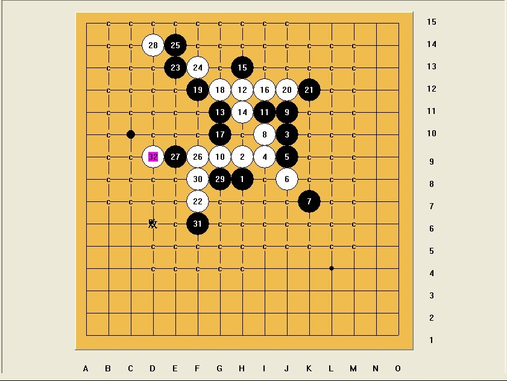

疏星四打 一个19的问题，求杀
#1 疏星四打 一个19的问题，求杀 作者：拈棋居 发表时间：2012-6-6 11:56:04
此19后的23是否能地毯？
此20过后，黑是否有防？
#2 Re:拈棋居【==疏星四打 一个19的问题，求杀==】 作者：极地剑客 发表时间：2012-6-6 12:29:13
目测b点这个会这样#3 Re:疏星四打 一个19的问题，求杀 作者：极地剑客 发表时间：2012-6-6 12:34:48
31反走的话～32-34～不知道有没难点～你找个［ 拈棋居 于 2012-6-6 12:45:03 时花20金币送鲜花一朵］
#4 Re:极地剑客【==Re:疏星四打 一个19的问题，求杀==】 作者：拈棋居 发表时间：2012-6-6 12:40:58
呃，你走的和我昨天拆的一模一样。这个31我早挂了，29唯一，31防下面我没搞定。。。。#5 Re:疏星四打 一个19的问题，求杀 作者：极地剑客 发表时间：2012-6-6 12:43:15
#6 Re:极地剑客【==Re:疏星四打 一个19的问题，求杀==】 作者：拈棋居 发表时间：2012-6-6 12:44:31
大哥，试过啦。。。总是差点，不然偶也不会来请教啦#7 Re:疏星四打 一个19的问题，求杀 作者：极地剑客 发表时间：2012-6-6 12:47:59
杀不掉的那路丢出来不就ok了～省事省力#8 Re:极地剑客【==Re:疏星四打 一个19的问题，求杀==】 作者：拈棋居 发表时间：2012-6-6 12:52:14

呃，怎么丢？偶是菜鸟，不会。。。
#9 Re:疏星四打 一个19的问题，求杀 作者：极地剑客 发表时间：2012-6-6 12:56:20
小黑已秒杀地毯～等俺上传谱～你检查看看～#10 Re:极地剑客【==Re:疏星四打 一个19的问题，求杀==】 作者：拈棋居 发表时间：2012-6-6 12:57:26
[/dl
呃，最后一个，应该是能杀掉，我时间不多，下午都是课，请 极地老师 说一下思路。
#11 Re:拈棋居【==疏星四打 一个19的问题，求杀==】 作者：极地剑客 发表时间：2012-6-6 12:59:20
 ditan11111111.rar
ditan11111111.rar
［ 拈棋居 于 2012-6-6 13:14:10 时花20金币送鲜花一朵］
#12 Re:疏星四打 一个19的问题，求杀 作者：絕版賭徒 发表时间：2012-6-6 13:02:10
极地剑客，一捅江湖#13 Re:疏星四打 一个19的问题，求杀 作者：极地剑客 发表时间：2012-6-6 13:03:13
黄徒也在挂机无聊啊#14 Re:极地剑客【==Re:拈棋居【==疏星四打 一个19的问题，求杀==】==】 作者：拈棋居 发表时间：2012-6-6 13:06:24
偶已经两年不用石头了，看来以后是要借鉴下，我的终结者为什么一扫全是黑点，我倒，一般看到后局超过10个黑点的，我就放弃了，看来这个习惯不好。我复拆看看，谢谢，极地老师。#15 Re:疏星四打 一个19的问题，求杀 作者：极地剑客 发表时间：2012-6-6 13:10:16
我家终结者一样不给力～电脑垃圾撒～算个3步vct都要4分钟～还不如纯小黑来的快，这个纯小黑秒了。黑丝在手，天下我有。
#16 Re:极地剑客【==Re:疏星四打 一个19的问题，求杀==】 作者：拈棋居 发表时间：2012-6-6 13:26:41
我倒，我复拆都用了这么久，偶扫个38出来10多个黑点，吐点血先。不过19左防，偶还是弄完了，谢谢 极地老师的帮助。偶觉得19冲四，阻力更大些，自己先拆着，以后不懂再来请教。再次谢谢。。。下午三四节有课，偶去呼呼了。。。。。。#17 Re:疏星四打 一个19的问题，求杀 作者：拈棋居 发表时间：2012-6-6 13:32:41
疏星 近败17.rar